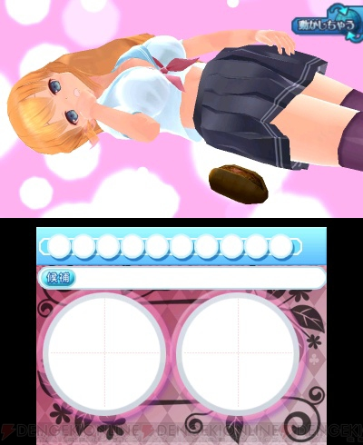

.
Onna Katei Kyoushi Jitka-sensei to Misshitsu ni Itara ** shichau Kamoshirenai
女 家庭 教師 伊都香 先生 と 密室 に いたら 〇〇 しちゃう かも しれない
Ages 17 and older.
Premise:
This is an Escape game: Find yourself in a situation and escape from it.
You play the role of "ヒーロ" hero and you have a problem: you cant talk to women very well.
Your helper is a tutor named, Jitka Ivano, a busty blonde-hair, blue-eyed Russian (or is she Czechoslovakian?).
You have the power of ESP. Build up your ESP power by closely looking at Miss Ivano.
When it comes time to use your power, you can view Miss Ivano from almost any angle by moving the Nintendo 3DS around.
some in-game quotes
| Image/Question | Write in | English | Japanese | |
 | ほん
kon | book | 本 | |
ケシゴム
keshigomu | eraser | 消しゴム | |
 | やきそば パン
yakisoba pan | Fried noodle bread | やきそば パン
ありがと | |
Image/Question | Write in | English | Japanese | |
Yes, that's right, an American who knows *no* Japanese, playing a Japanese game.
References:
1
2
3